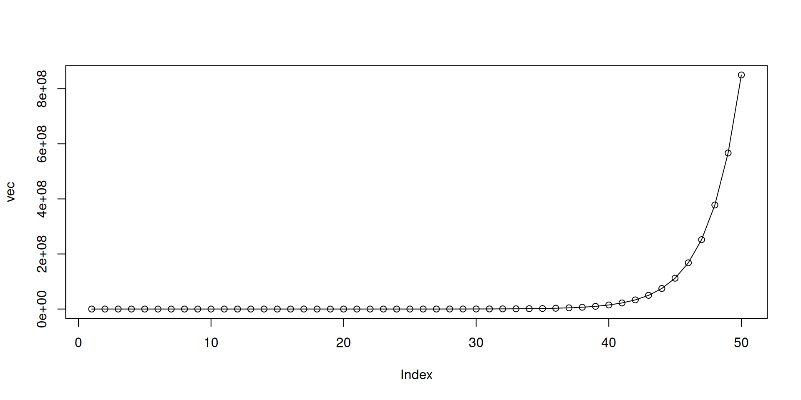
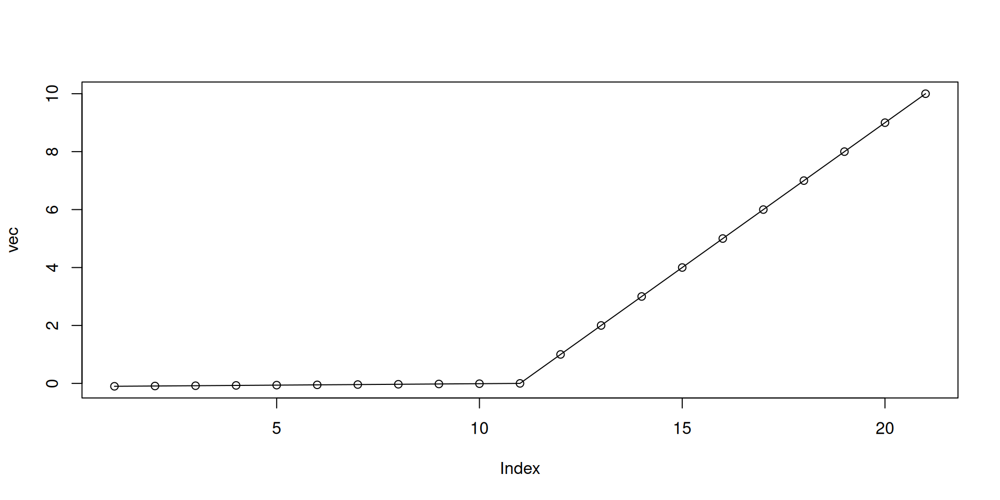

mpg cyl disp hp drat wt qsec vs am gear carb
Mazda RX4 21.0 6 160.0 110 3.90 2.620 16.46 0 1 4 4
Mazda RX4 Wag 21.0 6 160.0 110 3.90 2.875 17.02 0 1 4 4
Datsun 710 22.8 4 108.0 93 3.85 2.320 18.61 1 1 4 1
Hornet 4 Drive 21.4 6 258.0 110 3.08 3.215 19.44 1 0 3 1
Hornet Sportabout 18.7 8 360.0 175 3.15 3.440 17.02 0 0 3 2
Valiant 18.1 6 225.0 105 2.76 3.460 20.22 1 0 3 1
Duster 360 14.3 8 360.0 245 3.21 3.570 15.84 0 0 3 4
Merc 240D 24.4 4 146.7 62 3.69 3.190 20.00 1 0 4 2
Merc 230 22.8 4 140.8 95 3.92 3.150 22.90 1 0 4 2
Merc 280 19.2 6 167.6 123 3.92 3.440 18.30 1 0 4 4
Merc 280C 17.8 6 167.6 123 3.92 3.440 18.90 1 0 4 4
Merc 450SE 16.4 8 275.8 180 3.07 4.070 17.40 0 0 3 3
Merc 450SL 17.3 8 275.8 180 3.07 3.730 17.60 0 0 3 3
Merc 450SLC 15.2 8 275.8 180 3.07 3.780 18.00 0 0 3 3
Cadillac Fleetwood 10.4 8 472.0 205 2.93 5.250 17.98 0 0 3 4
Lincoln Continental 10.4 8 460.0 215 3.00 5.424 17.82 0 0 3 4
Chrysler Imperial 14.7 8 440.0 230 3.23 5.345 17.42 0 0 3 4
Fiat 128 32.4 4 78.7 66 4.08 2.200 19.47 1 1 4 1
Honda Civic 30.4 4 75.7 52 4.93 1.615 18.52 1 1 4 2
Toyota Corolla 33.9 4 71.1 65 4.22 1.835 19.90 1 1 4 1
Toyota Corona 21.5 4 120.1 97 3.70 2.465 20.01 1 0 3 1
Dodge Challenger 15.5 8 318.0 150 2.76 3.520 16.87 0 0 3 2
AMC Javelin 15.2 8 304.0 150 3.15 3.435 17.30 0 0 3 2
Camaro Z28 13.3 8 350.0 245 3.73 3.840 15.41 0 0 3 4
Pontiac Firebird 19.2 8 400.0 175 3.08 3.845 17.05 0 0 3 2
Fiat X1-9 27.3 4 79.0 66 4.08 1.935 18.90 1 1 4 1
Porsche 914-2 26.0 4 120.3 91 4.43 2.140 16.70 0 1 5 2
Lotus Europa 30.4 4 95.1 113 3.77 1.513 16.90 1 1 5 2
Ford Pantera L 15.8 8 351.0 264 4.22 3.170 14.50 0 1 5 4
Ferrari Dino 19.7 6 145.0 175 3.62 2.770 15.50 0 1 5 6
Maserati Bora 15.0 8 301.0 335 3.54 3.570 14.60 0 1 5 8
Volvo 142E 21.4 4 121.0 109 4.11 2.780 18.60 1 1 4 2Advance R topics
Tuyen Huynh - OUCRU Mathematical Modelling group
Hai Ho - OUCRU Emerging Infections group
Hai Ho - OUCRU Emerging Infections group
Topic overview
Morning:
- Into the
tidyverse - Data ingestion
- Pivot
tibbles into long and wide formats - How to handle
NAs - Select columns
Afternoon:
- Transforming
tibbles- Column manipulation
- Type assignment
- Joining
tibbles - Vectorisation in R with
map()(for loop)
Appendix
- If-else statements
- For-loops
- Piping in R
- Summarising
tibbles (push to day 5)
Into the tidyverse
Into the tidyverse
tidyverseis a collection of R packages built for data science- Provide alternatives to base R functionalities
- All packages shared the same principle of tidy data
Into the tidyverse

Into the tidyverse
- The main “unit” in
tidyverseis atibble - A
tibbleis a similar to a dataframe in base R - Difference:
tibblelooks different when printed out- seamless integration with every function in the
tidyverse - and more…
Into the tidyverse
Difference between a data.frame and a tibble
# A tibble: 32 × 12
model mpg cyl disp hp drat wt qsec vs am gear carb
<chr> <dbl> <dbl> <dbl> <dbl> <dbl> <dbl> <dbl> <dbl> <dbl> <dbl> <dbl>
1 Mazda RX4 21 6 160 110 3.9 2.62 16.5 0 1 4 4
2 Mazda RX4 … 21 6 160 110 3.9 2.88 17.0 0 1 4 4
3 Datsun 710 22.8 4 108 93 3.85 2.32 18.6 1 1 4 1
4 Hornet 4 D… 21.4 6 258 110 3.08 3.22 19.4 1 0 3 1
5 Hornet Spo… 18.7 8 360 175 3.15 3.44 17.0 0 0 3 2
6 Valiant 18.1 6 225 105 2.76 3.46 20.2 1 0 3 1
7 Duster 360 14.3 8 360 245 3.21 3.57 15.8 0 0 3 4
8 Merc 240D 24.4 4 147. 62 3.69 3.19 20 1 0 4 2
9 Merc 230 22.8 4 141. 95 3.92 3.15 22.9 1 0 4 2
10 Merc 280 19.2 6 168. 123 3.92 3.44 18.3 1 0 4 4
# ℹ 22 more rowsTidy data
- A
tibbleis a table of rows and columns, following the principle of tidy data - Each column is a variable
- Each row is an observation
- Each cell contains 1 value only
Tidy data
Which of these is a tidy data table
# A tibble: 2 × 4
country code `2015` `2016`
<chr> <chr> <dbl> <dbl>
1 Aruba ABW 28419. 28450.
2 Albania ALB 3953. 4124.or
# A tibble: 4 × 4
country code year gdp
<chr> <chr> <dbl> <dbl>
1 Aruba ABW 2015 28419.
2 Aruba ABW 2016 28450.
3 Albania ALB 2015 3953.
4 Albania ALB 2016 4124.Tidy data
- R object type:
data.frameortibble - Data structure: tidy or untidy data
Why tidyverse?
Takeaway points
tidyverseis not a replacement of base R. It is just a collection of R packages- You don’t have to use
tidyversewhen using R tidyversehas most functions for data science needs. Though, there are times base R will be needed, and might be better/easier/faster
Into the tidyverse
tidyverse functions that we will be using:
dplyr::select()to select columns from atibbledplyr::mutate()to modify and create columns in atibbledplyr::*_join()to jointibbles in a specified methodtidyr::pivot_longer()to transform atibblefrom wide to long format (less columns, more rows)tidyr::pivot_wider()to transform atibblefrom long to wide format (less rows, more columns)purrr::map()to performing vectorisation of function on vectors in R
Piping in R
- Typically in R, we perform a sequence of operations on a dataset, changing it as we go
- R has a functional style, which means the structure is typically:
new_data <- function(data, extra_arguments)functiondescribes your action, what you want to dodatais the data that you are execute the action onextra_argumentsare (optional) settings that changes how the action is performednew_datais the output, what you get after performing the action
Piping in R
- Example code
- How easy is it to understand/follow this code?
- Can we improve the readability?
Piping in R
- The example code can be rewritten as:
- Is this a better way to write it? Can we improve it even further?
- If we are performing a sequence of actions, each using the output of the previous action, we can use pipe
Piping with |>
- Pipe is a powerful tool to express a sequence of actions (functions)
- It helps you write code that is easier to read and understand
- In R, you can pipe between functions using the
|>operator - Rstudio shortcut: Cmd+Shift+M or Ctrl+Shift+M
|> vs. %>%
|>comes from R since version 4.1.0. It functions largely the same as%>%but not identical%>%comes from themagrittrpackage which is used by all oftidyverse- In this presentation
|>will be used
Piping with |>
- Pipes transfer the data from its left-hand side (LHS) to the function on its right-hand side (RHS) as the first argument of that function
- The structure:
Piping with |>
For example:
is exactly the same as
Piping with |>
Another example:
is exactly the same as
Piping with |>
- Using pipe, we can now rewrite the code as:
- For you, is it better/faster to understand what’s happening now?
Piping with |>
Quick comparison
vs.
Data manipulation with tidyverse
Data ingestion
Data ingestion
- Data comes in different formats (.xlsx, .csv, .tsv)
readris a package for reading rectangular text data filesreadxlis a package for reading Excel files- Both packages automatically read the data into a
tibble
Data ingestion
- Create a new R script
- Import
tidyverse - Load the
covid_cases.csvdata
[1] TRUE# A tibble: 92 × 211
date cases_chn cases_kor cases_aus cases_jpn cases_mys cases_phl
<date> <dbl> <dbl> <dbl> <dbl> <dbl> <dbl>
1 2020-01-20 0 0 0 0 0 0
2 2020-01-21 31 0 0 0 0 0
3 2020-01-23 262 0 0 0 0 0
4 2020-01-24 259 1 0 0 0 0
5 2020-01-25 467 0 3 2 0 0
6 2020-01-26 688 0 1 0 3 0
7 2020-01-27 776 2 0 1 1 0
8 2020-01-28 1776 0 1 2 0 0
9 2020-01-29 1460 0 2 1 0 0
10 2020-01-30 1739 0 0 4 3 1
# ℹ 82 more rows
# ℹ 204 more variables: cases_sgp <dbl>, cases_nzl <dbl>, cases_vnm <dbl>,
# cases_brn <dbl>, cases_khm <dbl>, cases_mng <dbl>, cases_fji <dbl>,
# cases_lao <dbl>, cases_png <dbl>, cases_gum <dbl>, cases_pyf <dbl>,
# cases_ncl <dbl>, cases_mnp <dbl>, cases_idn <dbl>, cases_tha <dbl>,
# cases_ind <dbl>, cases_lka <dbl>, cases_mdv <dbl>, cases_bgd <dbl>,
# cases_btn <dbl>, cases_npl <dbl>, cases_mmr <dbl>, cases_tls <dbl>, …Data ingestion
- You can quickly skim at the data using the
skimrpackage
| Name | covid_cases |
| Number of rows | 92 |
| Number of columns | 211 |
| _______________________ | |
| Column type frequency: | |
| Date | 1 |
| numeric | 210 |
| ________________________ | |
| Group variables | None |
Variable type: Date
| skim_variable | n_missing | complete_rate | min | max | median | n_unique |
|---|---|---|---|---|---|---|
| date | 0 | 1 | 2020-01-20 | 2020-04-21 | 2020-03-06 | 92 |
Variable type: numeric
| skim_variable | n_missing | complete_rate | mean | sd | p0 | p25 | p50 | p75 | p100 | hist |
|---|---|---|---|---|---|---|---|---|---|---|
| cases_chn | 0 | 1.00 | 912.74 | 2206.54 | 0 | 65.50 | 128.0 | 950.50 | 19461 | ▇▁▁▁▁ |
| cases_kor | 0 | 1.00 | 116.11 | 172.75 | 0 | 1.00 | 50.0 | 116.75 | 813 | ▇▁▁▁▁ |
| cases_aus | 0 | 1.00 | 72.01 | 132.25 | -9 | 0.00 | 5.5 | 79.25 | 650 | ▇▁▁▁▁ |
| cases_jpn | 0 | 1.00 | 120.84 | 189.92 | -8 | 3.75 | 26.5 | 127.25 | 743 | ▇▁▁▁▁ |
| cases_mys | 0 | 1.00 | 58.96 | 78.41 | 0 | 0.00 | 2.5 | 130.00 | 315 | ▇▂▂▁▁ |
| cases_phl | 1 | 0.99 | 70.98 | 115.50 | 0 | 0.00 | 1.0 | 100.00 | 538 | ▇▁▁▁▁ |
| cases_sgp | 0 | 1.00 | 87.11 | 216.70 | 0 | 2.00 | 7.5 | 51.25 | 1426 | ▇▁▁▁▁ |
| cases_nzl | 0 | 1.00 | 12.03 | 22.49 | 0 | 0.00 | 0.0 | 13.25 | 87 | ▇▁▁▁▁ |
| cases_vnm | 0 | 1.00 | 2.91 | 4.53 | 0 | 0.00 | 1.0 | 4.00 | 19 | ▇▂▁▁▁ |
| cases_brn | 1 | 0.99 | 1.52 | 3.49 | 0 | 0.00 | 0.0 | 1.00 | 17 | ▇▁▁▁▁ |
| cases_khm | 0 | 1.00 | 1.33 | 3.94 | -2 | 0.00 | 0.0 | 1.00 | 31 | ▇▁▁▁▁ |
| cases_mng | 0 | 1.00 | 0.36 | 1.47 | 0 | 0.00 | 0.0 | 0.00 | 13 | ▇▁▁▁▁ |
| cases_fji | 0 | 1.00 | 0.20 | 0.65 | 0 | 0.00 | 0.0 | 0.00 | 5 | ▇▁▁▁▁ |
| cases_lao | 0 | 1.00 | 0.21 | 0.64 | 0 | 0.00 | 0.0 | 0.00 | 3 | ▇▁▁▁▁ |
| cases_png | 0 | 1.00 | 0.08 | 0.54 | 0 | 0.00 | 0.0 | 0.00 | 5 | ▇▁▁▁▁ |
| cases_gum | 0 | 1.00 | 1.45 | 3.24 | -3 | 0.00 | 0.0 | 1.25 | 19 | ▇▂▁▁▁ |
| cases_pyf | 0 | 1.00 | 0.61 | 1.50 | 0 | 0.00 | 0.0 | 0.00 | 8 | ▇▁▁▁▁ |
| cases_ncl | 0 | 1.00 | 0.20 | 0.67 | 0 | 0.00 | 0.0 | 0.00 | 4 | ▇▁▁▁▁ |
| cases_mnp | 0 | 1.00 | 0.15 | 0.63 | 0 | 0.00 | 0.0 | 0.00 | 4 | ▇▁▁▁▁ |
| cases_idn | 0 | 1.00 | 73.48 | 132.25 | 0 | 0.00 | 0.0 | 106.25 | 729 | ▇▁▁▁▁ |
| cases_tha | 0 | 1.00 | 30.53 | 59.56 | 0 | 0.00 | 1.5 | 33.00 | 310 | ▇▁▁▁▁ |
| cases_ind | 0 | 1.00 | 202.18 | 400.26 | 0 | 0.00 | 1.0 | 89.00 | 1553 | ▇▁▁▁▁ |
| cases_lka | 0 | 1.00 | 3.30 | 6.12 | 0 | 0.00 | 0.0 | 5.00 | 33 | ▇▁▁▁▁ |
| cases_mdv | 0 | 1.00 | 0.73 | 2.59 | 0 | 0.00 | 0.0 | 0.00 | 17 | ▇▁▁▁▁ |
| cases_bgd | 0 | 1.00 | 32.04 | 88.77 | 0 | 0.00 | 0.0 | 3.50 | 492 | ▇▁▁▁▁ |
| cases_btn | 0 | 1.00 | 0.07 | 0.25 | 0 | 0.00 | 0.0 | 0.00 | 1 | ▇▁▁▁▁ |
| cases_npl | 0 | 1.00 | 0.34 | 1.58 | 0 | 0.00 | 0.0 | 0.00 | 14 | ▇▁▁▁▁ |
| cases_mmr | 1 | 0.99 | 1.08 | 2.77 | 0 | 0.00 | 0.0 | 0.00 | 13 | ▇▁▁▁▁ |
| cases_tls | 0 | 1.00 | 0.25 | 1.38 | 0 | 0.00 | 0.0 | 0.00 | 12 | ▇▁▁▁▁ |
| cases_usa | 1 | 0.99 | 8056.92 | 12354.68 | 0 | 0.00 | 6.0 | 17440.50 | 35386 | ▇▁▁▁▂ |
| cases_can | 0 | 1.00 | 384.60 | 600.99 | 0 | 0.00 | 5.0 | 778.75 | 1902 | ▇▁▁▂▁ |
| cases_bra | 0 | 1.00 | 420.15 | 768.31 | 0 | 0.00 | 0.5 | 490.75 | 3257 | ▇▁▁▁▁ |
| cases_chl | 0 | 1.00 | 114.21 | 205.81 | -381 | 0.00 | 0.0 | 236.50 | 1158 | ▁▇▂▁▁ |
| cases_ecu | 0 | 1.00 | 110.09 | 278.70 | 0 | 0.00 | 0.0 | 104.50 | 2196 | ▇▁▁▁▁ |
| cases_mex | 0 | 1.00 | 89.79 | 165.05 | 0 | 0.00 | 0.0 | 119.50 | 764 | ▇▁▁▁▁ |
| cases_dom | 1 | 0.99 | 54.55 | 106.97 | 0 | 0.00 | 0.0 | 52.50 | 393 | ▇▁▁▁▁ |
| cases_pan | 0 | 1.00 | 48.55 | 79.45 | 0 | 0.00 | 0.0 | 100.50 | 279 | ▇▁▁▁▁ |
| cases_per | 0 | 1.00 | 169.87 | 446.62 | 0 | 0.00 | 0.0 | 67.25 | 2784 | ▇▁▁▁▁ |
| cases_arg | 0 | 1.00 | 32.17 | 50.89 | 0 | 0.00 | 0.0 | 68.75 | 277 | ▇▂▁▁▁ |
| cases_col | 0 | 1.00 | 41.22 | 68.59 | 0 | 0.00 | 0.0 | 70.75 | 274 | ▇▁▁▁▁ |
| cases_cri | 0 | 1.00 | 7.17 | 11.09 | 0 | 0.00 | 0.0 | 16.00 | 41 | ▇▁▂▁▁ |
| cases_ury | 0 | 1.00 | 5.74 | 11.99 | -29 | 0.00 | 0.0 | 9.00 | 55 | ▁▇▃▁▁ |
| cases_cub | 1 | 0.99 | 11.95 | 20.15 | 0 | 0.00 | 0.0 | 17.50 | 63 | ▇▁▁▁▁ |
| cases_hnd | 0 | 1.00 | 5.18 | 10.92 | 0 | 0.00 | 0.0 | 4.00 | 47 | ▇▁▁▁▁ |
| cases_ven | 1 | 0.99 | 2.81 | 6.94 | 0 | 0.00 | 0.0 | 0.00 | 34 | ▇▁▁▁▁ |
| cases_bol | 1 | 0.99 | 6.20 | 11.81 | 0 | 0.00 | 0.0 | 7.50 | 54 | ▇▁▁▁▁ |
| cases_tto | 0 | 1.00 | 1.24 | 4.51 | 0 | 0.00 | 0.0 | 1.00 | 41 | ▇▁▁▁▁ |
| cases_pry | 0 | 1.00 | 2.26 | 4.36 | -3 | 0.00 | 0.0 | 3.25 | 25 | ▇▂▁▁▁ |
| cases_gtm | 0 | 1.00 | 3.14 | 6.55 | 0 | 0.00 | 0.0 | 3.00 | 32 | ▇▁▁▁▁ |
| cases_jam | 0 | 1.00 | 2.13 | 5.38 | 0 | 0.00 | 0.0 | 2.00 | 32 | ▇▁▁▁▁ |
| cases_slv | 0 | 1.00 | 2.37 | 4.40 | 0 | 0.00 | 0.0 | 2.00 | 17 | ▇▁▁▁▁ |
| cases_brb | 0 | 1.00 | 0.82 | 2.20 | 0 | 0.00 | 0.0 | 0.00 | 12 | ▇▁▁▁▁ |
| cases_guy | 0 | 1.00 | 0.71 | 1.96 | -5 | 0.00 | 0.0 | 0.00 | 10 | ▁▇▁▁▁ |
| cases_hti | 0 | 1.00 | 0.51 | 1.41 | 0 | 0.00 | 0.0 | 0.00 | 9 | ▇▁▁▁▁ |
| cases_lca | 0 | 1.00 | 0.16 | 0.70 | 0 | 0.00 | 0.0 | 0.00 | 5 | ▇▁▁▁▁ |
| cases_dma | 0 | 1.00 | 0.17 | 0.75 | 0 | 0.00 | 0.0 | 0.00 | 5 | ▇▁▁▁▁ |
| cases_grd | 0 | 1.00 | 0.14 | 0.74 | -1 | 0.00 | 0.0 | 0.00 | 6 | ▇▁▁▁▁ |
| cases_sur | 0 | 1.00 | 0.11 | 0.50 | 0 | 0.00 | 0.0 | 0.00 | 4 | ▇▁▁▁▁ |
| cases_kna | 0 | 1.00 | 0.16 | 0.77 | -2 | 0.00 | 0.0 | 0.00 | 6 | ▁▇▁▁▁ |
| cases_atg | 0 | 1.00 | 0.25 | 1.07 | 0 | 0.00 | 0.0 | 0.00 | 8 | ▇▁▁▁▁ |
| cases_nic | 0 | 1.00 | 0.10 | 0.36 | 0 | 0.00 | 0.0 | 0.00 | 2 | ▇▁▁▁▁ |
| cases_blz | 0 | 1.00 | 0.20 | 0.62 | 0 | 0.00 | 0.0 | 0.00 | 4 | ▇▁▁▁▁ |
| cases_vct | 0 | 1.00 | 0.13 | 0.62 | 0 | 0.00 | 0.0 | 0.00 | 4 | ▇▁▁▁▁ |
| cases_pri | 0 | 1.00 | 13.61 | 26.70 | 0 | 0.00 | 0.0 | 8.00 | 110 | ▇▁▁▁▁ |
| cases_mtq | 0 | 1.00 | 1.77 | 4.24 | 0 | 0.00 | 0.0 | 1.00 | 27 | ▇▁▁▁▁ |
| cases_glp | 0 | 1.00 | 1.61 | 3.73 | 0 | 0.00 | 0.0 | 1.00 | 20 | ▇▁▁▁▁ |
| cases_abw | 0 | 1.00 | 1.05 | 2.64 | 0 | 0.00 | 0.0 | 0.25 | 18 | ▇▁▁▁▁ |
| cases_guf | 0 | 1.00 | 1.05 | 2.08 | 0 | 0.00 | 0.0 | 1.00 | 12 | ▇▁▁▁▁ |
| cases_vir | 0 | 1.00 | 0.58 | 1.72 | -2 | 0.00 | 0.0 | 0.00 | 11 | ▇▁▁▁▁ |
| cases_bmu | 0 | 1.00 | 0.93 | 3.01 | 0 | 0.00 | 0.0 | 0.00 | 24 | ▇▁▁▁▁ |
| cases_cym | 0 | 1.00 | 0.66 | 1.82 | 0 | 0.00 | 0.0 | 0.00 | 8 | ▇▁▁▁▁ |
| cases_sxm | 0 | 1.00 | 0.73 | 2.28 | 0 | 0.00 | 0.0 | 0.00 | 14 | ▇▁▁▁▁ |
| cases_maf | 0 | 1.00 | 0.40 | 1.64 | -6 | 0.00 | 0.0 | 0.00 | 12 | ▁▇▁▁▁ |
| cases_cuw | 0 | 1.00 | 0.15 | 0.57 | 0 | 0.00 | 0.0 | 0.00 | 4 | ▇▁▁▁▁ |
| cases_blm | 0 | 1.00 | 0.07 | 0.32 | 0 | 0.00 | 0.0 | 0.00 | 2 | ▇▁▁▁▁ |
| cases_msr | 0 | 1.00 | 0.12 | 0.47 | 0 | 0.00 | 0.0 | 0.00 | 3 | ▇▁▁▁▁ |
| cases_tca | 0 | 1.00 | 0.12 | 0.44 | 0 | 0.00 | 0.0 | 0.00 | 3 | ▇▁▁▁▁ |
| cases_aia | 0 | 1.00 | 0.03 | 0.23 | 0 | 0.00 | 0.0 | 0.00 | 2 | ▇▁▁▁▁ |
| cases_vgb | 0 | 1.00 | 0.04 | 0.25 | 0 | 0.00 | 0.0 | 0.00 | 2 | ▇▁▁▁▁ |
| cases_bes | 0 | 1.00 | 0.05 | 0.27 | 0 | 0.00 | 0.0 | 0.00 | 2 | ▇▁▁▁▁ |
| cases_flk | 0 | 1.00 | 0.12 | 0.71 | 0 | 0.00 | 0.0 | 0.00 | 6 | ▇▁▁▁▁ |
| cases_spm | 0 | 1.00 | 0.01 | 0.10 | 0 | 0.00 | 0.0 | 0.00 | 1 | ▇▁▁▁▁ |
| cases_esp | 0 | 1.00 | 2176.20 | 2853.62 | 0 | 0.00 | 64.0 | 4334.00 | 9222 | ▇▁▂▁▁ |
| cases_ita | 0 | 1.00 | 1969.87 | 2143.42 | 0 | 0.00 | 773.5 | 3864.75 | 6557 | ▇▁▂▂▁ |
| cases_deu | 0 | 1.00 | 1559.32 | 2122.93 | 0 | 0.00 | 88.5 | 2934.50 | 7324 | ▇▂▁▁▁ |
| cases_fra | 0 | 1.00 | 1233.84 | 1723.43 | 0 | 0.00 | 115.5 | 2152.00 | 7500 | ▇▂▂▁▁ |
| cases_gbr | 0 | 1.00 | 1355.95 | 2097.38 | 0 | 0.00 | 40.5 | 2564.25 | 8719 | ▇▁▂▁▁ |
| cases_tur | 0 | 1.00 | 988.91 | 1644.14 | 0 | 0.00 | 0.0 | 1745.25 | 5138 | ▇▁▁▁▁ |
| cases_bel | 0 | 1.00 | 434.60 | 624.56 | 0 | 0.00 | 4.0 | 967.75 | 2454 | ▇▁▂▁▁ |
| cases_che | 0 | 1.00 | 302.85 | 416.18 | 0 | 0.00 | 13.5 | 577.75 | 1774 | ▇▁▂▁▁ |
| cases_nld | 0 | 1.00 | 363.10 | 467.53 | 0 | 0.00 | 45.0 | 846.75 | 1335 | ▇▁▁▂▂ |
| cases_prt | 0 | 1.00 | 226.77 | 333.58 | 0 | 0.00 | 0.0 | 473.50 | 1516 | ▇▁▂▁▁ |
| cases_aut | 0 | 1.00 | 160.68 | 248.51 | 0 | 0.00 | 11.5 | 242.50 | 1141 | ▇▂▁▁▁ |
| cases_rus | 0 | 1.00 | 573.51 | 1498.00 | 0 | 0.00 | 0.0 | 222.00 | 9910 | ▇▁▁▁▁ |
| cases_isr | 0 | 1.00 | 150.90 | 231.99 | 0 | 0.00 | 2.0 | 272.50 | 932 | ▇▂▁▁▁ |
| cases_swe | 0 | 1.00 | 160.62 | 216.14 | 0 | 0.00 | 25.0 | 304.00 | 726 | ▇▁▁▁▁ |
| cases_irl | 0 | 1.00 | 170.13 | 281.64 | 0 | 0.00 | 1.0 | 257.50 | 1169 | ▇▂▁▁▁ |
| cases_nor | 0 | 1.00 | 77.32 | 101.16 | 0 | 0.00 | 15.5 | 132.25 | 425 | ▇▂▂▁▁ |
| cases_dnk | 0 | 1.00 | 81.68 | 108.94 | 0 | 0.00 | 5.0 | 158.50 | 390 | ▇▂▂▁▁ |
| cases_pol | 0 | 1.00 | 104.27 | 153.94 | 0 | 0.00 | 0.5 | 200.75 | 545 | ▇▁▁▁▁ |
| cases_cze | 0 | 1.00 | 75.15 | 105.36 | 0 | 0.00 | 4.5 | 130.75 | 408 | ▇▂▁▁▁ |
| cases_rou | 0 | 1.00 | 97.13 | 147.03 | 0 | 0.00 | 1.0 | 190.50 | 523 | ▇▁▁▁▁ |
| cases_lux | 0 | 1.00 | 38.67 | 62.26 | 0 | 0.00 | 0.0 | 64.50 | 234 | ▇▁▁▁▁ |
| cases_srb | 0 | 1.00 | 72.07 | 123.95 | 0 | 0.00 | 0.0 | 81.25 | 445 | ▇▁▁▁▁ |
| cases_fin | 0 | 1.00 | 42.04 | 61.39 | 0 | 0.00 | 0.5 | 76.50 | 267 | ▇▃▁▁▁ |
| cases_ukr | 0 | 1.00 | 66.58 | 124.35 | 0 | 0.00 | 0.0 | 68.25 | 500 | ▇▁▁▁▁ |
| cases_grc | 0 | 1.00 | 24.40 | 35.87 | 0 | 0.00 | 0.0 | 49.00 | 139 | ▇▁▂▁▁ |
| cases_isl | 0 | 1.00 | 19.27 | 29.50 | 0 | 0.00 | 0.0 | 26.25 | 99 | ▇▁▁▁▁ |
| cases_hrv | 0 | 1.00 | 20.45 | 29.25 | 0 | 0.00 | 1.0 | 41.25 | 96 | ▇▁▂▁▁ |
| cases_mda | 0 | 1.00 | 27.70 | 49.17 | 0 | 0.00 | 0.0 | 29.00 | 222 | ▇▁▁▁▁ |
| cases_est | 0 | 1.00 | 16.68 | 27.84 | 0 | 0.00 | 0.0 | 26.75 | 134 | ▇▂▁▁▁ |
| cases_hun | 0 | 1.00 | 22.80 | 37.95 | 0 | 0.00 | 0.0 | 39.00 | 210 | ▇▂▁▁▁ |
| cases_svn | 0 | 1.00 | 14.51 | 19.96 | 0 | 0.00 | 0.5 | 28.00 | 84 | ▇▂▂▁▁ |
| cases_blr | 0 | 1.00 | 68.09 | 208.36 | 0 | 0.00 | 0.0 | 5.75 | 1485 | ▇▁▁▁▁ |
| cases_ltu | 0 | 1.00 | 14.67 | 25.02 | 0 | 0.00 | 0.0 | 28.50 | 122 | ▇▂▁▁▁ |
| cases_arm | 0 | 1.00 | 14.55 | 23.22 | 0 | 0.00 | 0.0 | 26.50 | 96 | ▇▁▂▁▁ |
| cases_aze | 0 | 1.00 | 15.61 | 26.14 | 0 | 0.00 | 0.0 | 25.00 | 105 | ▇▁▁▁▁ |
| cases_bih | 0 | 1.00 | 14.13 | 21.62 | 0 | 0.00 | 0.0 | 30.00 | 86 | ▇▁▁▁▁ |
| cases_kaz | 0 | 1.00 | 20.13 | 46.24 | 0 | 0.00 | 0.0 | 18.50 | 306 | ▇▁▁▁▁ |
| cases_svk | 0 | 1.00 | 12.75 | 22.27 | 0 | 0.00 | 0.0 | 14.00 | 114 | ▇▁▁▁▁ |
| cases_mkd | 1 | 0.99 | 13.46 | 22.99 | 0 | 0.00 | 0.0 | 22.00 | 117 | ▇▂▁▁▁ |
| cases_bgr | 0 | 1.00 | 10.10 | 14.01 | -3 | 0.00 | 0.0 | 18.25 | 53 | ▇▂▂▂▁ |
| cases_uzb | 0 | 1.00 | 18.01 | 38.09 | 0 | 0.00 | 0.0 | 15.50 | 172 | ▇▁▁▁▁ |
| cases_and | 0 | 1.00 | 7.80 | 13.08 | 0 | 0.00 | 0.0 | 13.00 | 58 | ▇▂▁▁▁ |
| cases_lva | 0 | 1.00 | 8.03 | 12.94 | 0 | 0.00 | 0.0 | 13.25 | 71 | ▇▂▁▁▁ |
| cases_cyp | 0 | 1.00 | 8.39 | 12.89 | 0 | 0.00 | 0.0 | 16.25 | 58 | ▇▂▁▁▁ |
| cases_alb | 0 | 1.00 | 6.62 | 12.01 | 0 | 0.00 | 0.0 | 9.25 | 56 | ▇▁▁▁▁ |
| cases_smr | 0 | 1.00 | 5.02 | 8.92 | 0 | 0.00 | 0.0 | 7.00 | 36 | ▇▁▁▁▁ |
| cases_mlt | 0 | 1.00 | 4.68 | 8.22 | 0 | 0.00 | 0.0 | 7.25 | 52 | ▇▁▁▁▁ |
| cases_kgz | 0 | 1.00 | 6.41 | 13.01 | 0 | 0.00 | 0.0 | 5.00 | 69 | ▇▂▁▁▁ |
| cases_mne | 0 | 1.00 | 3.39 | 6.89 | 0 | 0.00 | 0.0 | 3.25 | 37 | ▇▁▁▁▁ |
| cases_geo | 0 | 1.00 | 4.43 | 7.29 | 0 | 0.00 | 0.0 | 6.00 | 34 | ▇▁▁▁▁ |
| cases_lie | 0 | 1.00 | 0.89 | 2.50 | 0 | 0.00 | 0.0 | 1.00 | 18 | ▇▁▁▁▁ |
| cases_mco | 0 | 1.00 | 0.74 | 6.38 | -30 | 0.00 | 0.0 | 0.00 | 39 | ▁▁▇▁▁ |
| cases_vat | 0 | 1.00 | 0.10 | 0.42 | 0 | 0.00 | 0.0 | 0.00 | 3 | ▇▁▁▁▁ |
| cases_fro | 0 | 1.00 | 2.01 | 5.24 | -1 | 0.00 | 0.0 | 1.00 | 36 | ▇▁▁▁▁ |
| cases_ggy | 0 | 1.00 | 2.60 | 5.37 | 0 | 0.00 | 0.0 | 2.25 | 23 | ▇▁▁▁▁ |
| cases_jey | 0 | 1.00 | 2.71 | 6.61 | -2 | 0.00 | 0.0 | 2.00 | 37 | ▇▁▁▁▁ |
| cases_imn | 0 | 1.00 | 3.23 | 7.49 | 0 | 0.00 | 0.0 | 1.25 | 43 | ▇▁▁▁▁ |
| cases_gib | 0 | 1.00 | 1.45 | 3.79 | 0 | 0.00 | 0.0 | 0.00 | 20 | ▇▁▁▁▁ |
| cases_grl | 0 | 1.00 | 0.12 | 0.47 | 0 | 0.00 | 0.0 | 0.00 | 3 | ▇▁▁▁▁ |
| cases_irn | 0 | 1.00 | 907.66 | 1003.20 | 0 | 0.00 | 593.0 | 1582.00 | 3186 | ▇▂▂▂▂ |
| cases_pak | 0 | 1.00 | 100.17 | 170.27 | 0 | 0.00 | 0.0 | 162.75 | 798 | ▇▂▁▁▁ |
| cases_sau | 0 | 1.00 | 113.96 | 236.68 | -1 | 0.00 | 0.0 | 113.50 | 1132 | ▇▁▁▁▁ |
| cases_qat | 0 | 1.00 | 65.38 | 125.28 | 0 | 0.00 | 1.0 | 60.25 | 567 | ▇▁▁▁▁ |
| cases_egy | 1 | 0.99 | 36.63 | 55.04 | 0 | 0.00 | 0.0 | 46.50 | 189 | ▇▂▁▁▁ |
| cases_irq | 0 | 1.00 | 17.11 | 23.84 | 0 | 0.00 | 4.5 | 30.25 | 91 | ▇▂▁▁▁ |
| cases_are | 0 | 1.00 | 78.97 | 145.82 | 0 | 0.00 | 0.0 | 55.50 | 484 | ▇▁▁▁▁ |
| cases_mar | 0 | 1.00 | 33.11 | 58.20 | 0 | 0.00 | 0.0 | 51.25 | 281 | ▇▂▁▁▁ |
| cases_bhr | 0 | 1.00 | 20.73 | 38.78 | 0 | 0.00 | 2.5 | 23.75 | 226 | ▇▁▁▁▁ |
| cases_lbn | 0 | 1.00 | 7.36 | 10.72 | 0 | 0.00 | 0.5 | 11.00 | 43 | ▇▂▁▁▁ |
| cases_tun | 0 | 1.00 | 9.61 | 15.28 | 0 | 0.00 | 0.0 | 15.75 | 59 | ▇▂▁▁▁ |
| cases_jor | 0 | 1.00 | 4.62 | 8.13 | 0 | 0.00 | 0.0 | 6.00 | 40 | ▇▁▁▁▁ |
| cases_kwt | 1 | 0.99 | 21.92 | 40.54 | 0 | 0.00 | 0.0 | 19.00 | 164 | ▇▁▁▁▁ |
| cases_omn | 0 | 1.00 | 16.39 | 32.02 | 0 | 0.00 | 0.0 | 16.50 | 144 | ▇▁▁▁▁ |
| cases_afg | 0 | 1.00 | 11.15 | 21.14 | 0 | 0.00 | 0.0 | 10.00 | 105 | ▇▁▁▁▁ |
| cases_dji | 0 | 1.00 | 9.20 | 27.84 | 0 | 0.00 | 0.0 | 1.25 | 156 | ▇▁▁▁▁ |
| cases_syr | 0 | 1.00 | 0.42 | 1.31 | 0 | 0.00 | 0.0 | 0.00 | 6 | ▇▁▁▁▁ |
| cases_lby | 0 | 1.00 | 0.55 | 1.89 | 0 | 0.00 | 0.0 | 0.00 | 13 | ▇▁▁▁▁ |
| cases_sdn | 0 | 1.00 | 1.16 | 4.70 | -1 | 0.00 | 0.0 | 0.00 | 33 | ▇▁▁▁▁ |
| cases_som | 0 | 1.00 | 2.58 | 9.93 | 0 | 0.00 | 0.0 | 0.00 | 73 | ▇▁▁▁▁ |
| cases_yem | 0 | 1.00 | 0.01 | 0.10 | 0 | 0.00 | 0.0 | 0.00 | 1 | ▇▁▁▁▁ |
| cases_pse | 0 | 1.00 | 3.58 | 6.75 | 0 | 0.00 | 0.0 | 4.00 | 31 | ▇▁▁▁▁ |
| cases_zaf | 0 | 1.00 | 35.87 | 59.43 | 0 | 0.00 | 0.0 | 54.25 | 251 | ▇▂▁▁▁ |
| cases_dza | 0 | 1.00 | 29.54 | 54.26 | 0 | 0.00 | 0.0 | 42.75 | 265 | ▇▂▁▁▁ |
| cases_bfa | 1 | 0.99 | 5.49 | 11.28 | 0 | 0.00 | 0.0 | 3.50 | 54 | ▇▁▁▁▁ |
| cases_civ | 0 | 1.00 | 9.55 | 22.19 | 0 | 0.00 | 0.0 | 3.00 | 105 | ▇▁▁▁▁ |
| cases_sen | 0 | 1.00 | 4.10 | 6.10 | 0 | 0.00 | 0.0 | 7.25 | 23 | ▇▂▂▁▁ |
| cases_gha | 0 | 1.00 | 11.33 | 35.87 | 0 | 0.00 | 0.0 | 2.25 | 208 | ▇▁▁▁▁ |
| cases_cmr | 0 | 1.00 | 12.64 | 44.62 | -2 | 0.00 | 0.0 | 0.00 | 309 | ▇▁▁▁▁ |
| cases_nga | 0 | 1.00 | 5.88 | 19.39 | -2 | 0.00 | 0.0 | 0.25 | 168 | ▇▁▁▁▁ |
| cases_mus | 0 | 1.00 | 3.57 | 8.50 | 0 | 0.00 | 0.0 | 1.25 | 41 | ▇▁▁▁▁ |
| cases_cod | 0 | 1.00 | 3.80 | 7.00 | 0 | 0.00 | 0.0 | 6.00 | 40 | ▇▁▁▁▁ |
| cases_rwa | 0 | 1.00 | 1.60 | 3.21 | 0 | 0.00 | 0.0 | 2.00 | 19 | ▇▂▁▁▁ |
| cases_mdg | 0 | 1.00 | 1.32 | 3.07 | 0 | 0.00 | 0.0 | 0.00 | 15 | ▇▁▁▁▁ |
| cases_ken | 0 | 1.00 | 3.05 | 6.58 | 0 | 0.00 | 0.0 | 2.00 | 31 | ▇▁▁▁▁ |
| cases_zmb | 0 | 1.00 | 0.71 | 2.42 | 0 | 0.00 | 0.0 | 0.00 | 19 | ▇▁▁▁▁ |
| cases_tgo | 0 | 1.00 | 0.91 | 2.36 | -1 | 0.00 | 0.0 | 0.25 | 14 | ▇▁▁▁▁ |
| cases_uga | 0 | 1.00 | 0.60 | 2.50 | 0 | 0.00 | 0.0 | 0.00 | 19 | ▇▁▁▁▁ |
| cases_eth | 0 | 1.00 | 1.21 | 2.26 | 0 | 0.00 | 0.0 | 2.00 | 9 | ▇▁▁▁▁ |
| cases_ner | 0 | 1.00 | 7.12 | 17.41 | 0 | 0.00 | 0.0 | 0.00 | 94 | ▇▁▁▁▁ |
| cases_cog | 0 | 1.00 | 1.74 | 6.20 | 0 | 0.00 | 0.0 | 0.00 | 43 | ▇▁▁▁▁ |
| cases_tza | 0 | 1.00 | 2.77 | 11.24 | 0 | 0.00 | 0.0 | 0.00 | 84 | ▇▁▁▁▁ |
| cases_mli | 0 | 1.00 | 2.67 | 6.50 | 0 | 0.00 | 0.0 | 0.00 | 29 | ▇▁▁▁▁ |
| cases_gin | 0 | 1.00 | 6.76 | 20.34 | 0 | 0.00 | 0.0 | 0.00 | 145 | ▇▁▁▁▁ |
| cases_gnq | 0 | 1.00 | 0.86 | 3.77 | 0 | 0.00 | 0.0 | 0.00 | 28 | ▇▁▁▁▁ |
| cases_nam | 0 | 1.00 | 0.17 | 0.59 | 0 | 0.00 | 0.0 | 0.00 | 3 | ▇▁▁▁▁ |
| cases_swz | 0 | 1.00 | 0.26 | 0.74 | 0 | 0.00 | 0.0 | 0.00 | 3 | ▇▁▁▁▁ |
| cases_moz | 0 | 1.00 | 0.38 | 1.21 | 0 | 0.00 | 0.0 | 0.00 | 7 | ▇▁▁▁▁ |
| cases_syc | 0 | 1.00 | 0.12 | 0.44 | 0 | 0.00 | 0.0 | 0.00 | 2 | ▇▁▁▁▁ |
| cases_gab | 0 | 1.00 | 1.30 | 3.95 | 0 | 0.00 | 0.0 | 0.00 | 23 | ▇▁▁▁▁ |
| cases_ben | 0 | 1.00 | 0.59 | 2.17 | 0 | 0.00 | 0.0 | 0.00 | 17 | ▇▁▁▁▁ |
| cases_caf | 0 | 1.00 | 0.13 | 0.40 | 0 | 0.00 | 0.0 | 0.00 | 2 | ▇▁▁▁▁ |
| cases_eri | 0 | 1.00 | 0.42 | 1.52 | 0 | 0.00 | 0.0 | 0.00 | 9 | ▇▁▁▁▁ |
| cases_cpv | 0 | 1.00 | 0.60 | 4.70 | 0 | 0.00 | 0.0 | 0.00 | 45 | ▇▁▁▁▁ |
| cases_tcd | 0 | 1.00 | 0.36 | 1.21 | 0 | 0.00 | 0.0 | 0.00 | 7 | ▇▁▁▁▁ |
| cases_mrt | 0 | 1.00 | 0.08 | 0.31 | 0 | 0.00 | 0.0 | 0.00 | 2 | ▇▁▁▁▁ |
| cases_zwe | 0 | 1.00 | 0.27 | 0.79 | 0 | 0.00 | 0.0 | 0.00 | 5 | ▇▁▁▁▁ |
| cases_gmb | 0 | 1.00 | 0.11 | 0.56 | 0 | 0.00 | 0.0 | 0.00 | 5 | ▇▁▁▁▁ |
| cases_lbr | 0 | 1.00 | 1.08 | 3.03 | 0 | 0.00 | 0.0 | 0.00 | 17 | ▇▁▁▁▁ |
| cases_ago | 0 | 1.00 | 0.26 | 0.92 | 0 | 0.00 | 0.0 | 0.00 | 5 | ▇▁▁▁▁ |
| cases_gnb | 1 | 0.99 | 0.52 | 1.94 | 0 | 0.00 | 0.0 | 0.00 | 15 | ▇▁▁▁▁ |
| cases_bwa | 0 | 1.00 | 0.22 | 0.98 | 0 | 0.00 | 0.0 | 0.00 | 7 | ▇▁▁▁▁ |
| cases_mwi | 0 | 1.00 | 0.18 | 0.69 | 0 | 0.00 | 0.0 | 0.00 | 4 | ▇▁▁▁▁ |
| cases_stp | 0 | 1.00 | 0.04 | 0.42 | 0 | 0.00 | 0.0 | 0.00 | 4 | ▇▁▁▁▁ |
| cases_bdi | 0 | 1.00 | 0.07 | 0.32 | 0 | 0.00 | 0.0 | 0.00 | 2 | ▇▁▁▁▁ |
| cases_sle | 0 | 1.00 | 0.47 | 1.59 | 0 | 0.00 | 0.0 | 0.00 | 11 | ▇▁▁▁▁ |
| cases_ssd | 0 | 1.00 | 0.04 | 0.25 | 0 | 0.00 | 0.0 | 0.00 | 2 | ▇▁▁▁▁ |
| cases_reu | 0 | 1.00 | 4.43 | 10.29 | -1 | 0.00 | 0.0 | 4.00 | 64 | ▇▁▁▁▁ |
| cases_myt | 0 | 1.00 | 3.09 | 7.10 | 0 | 0.00 | 0.0 | 1.00 | 39 | ▇▁▁▁▁ |
Pivot tibbles
- Does this data follow the tidy data principle?
# A tibble: 92 × 211
date cases_chn cases_kor cases_aus cases_jpn cases_mys cases_phl
<date> <dbl> <dbl> <dbl> <dbl> <dbl> <dbl>
1 2020-01-20 0 0 0 0 0 0
2 2020-01-21 31 0 0 0 0 0
3 2020-01-23 262 0 0 0 0 0
4 2020-01-24 259 1 0 0 0 0
5 2020-01-25 467 0 3 2 0 0
6 2020-01-26 688 0 1 0 3 0
7 2020-01-27 776 2 0 1 1 0
8 2020-01-28 1776 0 1 2 0 0
9 2020-01-29 1460 0 2 1 0 0
10 2020-01-30 1739 0 0 4 3 1
# ℹ 82 more rows
# ℹ 204 more variables: cases_sgp <dbl>, cases_nzl <dbl>, cases_vnm <dbl>,
# cases_brn <dbl>, cases_khm <dbl>, cases_mng <dbl>, cases_fji <dbl>,
# cases_lao <dbl>, cases_png <dbl>, cases_gum <dbl>, cases_pyf <dbl>,
# cases_ncl <dbl>, cases_mnp <dbl>, cases_idn <dbl>, cases_tha <dbl>,
# cases_ind <dbl>, cases_lka <dbl>, cases_mdv <dbl>, cases_bgd <dbl>,
# cases_btn <dbl>, cases_npl <dbl>, cases_mmr <dbl>, cases_tls <dbl>, …- What do we want? Less columns more rows -> We want to pivot it longer
Pivot tibbles
- Let’s use
pivot_longer()to turn our data into tidy data
# A tibble: 19,320 × 3
date country cases
<date> <chr> <dbl>
1 2020-01-20 chn 0
2 2020-01-20 kor 0
3 2020-01-20 aus 0
4 2020-01-20 jpn 0
5 2020-01-20 mys 0
6 2020-01-20 phl 0
7 2020-01-20 sgp 0
8 2020-01-20 nzl 0
9 2020-01-20 vnm 0
10 2020-01-20 brn 0
# ℹ 19,310 more rowsPivot tibbles
- Now that the data is a tidy data
tibble, let’s take a look at it again
| Name | covid_cases |
| Number of rows | 19320 |
| Number of columns | 3 |
| _______________________ | |
| Column type frequency: | |
| character | 1 |
| Date | 1 |
| numeric | 1 |
| ________________________ | |
| Group variables | None |
Variable type: character
| skim_variable | n_missing | complete_rate | min | max | empty | n_unique | whitespace |
|---|---|---|---|---|---|---|---|
| country | 0 | 1 | 3 | 3 | 0 | 210 | 0 |
Variable type: Date
| skim_variable | n_missing | complete_rate | min | max | median | n_unique |
|---|---|---|---|---|---|---|
| date | 0 | 1 | 2020-01-20 | 2020-04-21 | 2020-03-06 | 92 |
Variable type: numeric
| skim_variable | n_missing | complete_rate | mean | sd | p0 | p25 | p50 | p75 | p100 | hist |
|---|---|---|---|---|---|---|---|---|---|---|
| cases | 13 | 1 | 123.14 | 1128.03 | -381 | 0 | 0 | 3 | 35386 | ▇▁▁▁▁ |
Handling NAs
- Let’s check the
NAincases - You can filter your
tibblewith…filter()
# A tibble: 13 × 3
date country cases
<date> <chr> <dbl>
1 2020-01-20 bol NA
2 2020-01-25 egy NA
3 2020-01-27 brn NA
4 2020-01-27 cub NA
5 2020-02-02 ven NA
6 2020-02-05 dom NA
7 2020-02-21 kwt NA
8 2020-02-26 phl NA
9 2020-02-29 mkd NA
10 2020-03-29 usa NA
11 2020-03-30 bfa NA
12 2020-04-14 mmr NA
13 2020-04-16 gnb NAHandling NAs
- Make your decision:
- Remove rows with
NAs - Data imputation, i.e. replace the
NAs with something that makes sense like mean, mode, median, interpolation,… - Something else?
- Remove rows with
Handling NAs
- Remove rows with
NAs usingdrop_na()
Handling NAs
- You can further specify the column to drop
NAs from
# A tibble: 19,307 × 3
date country cases
<date> <chr> <dbl>
1 2020-01-20 chn 0
2 2020-01-20 kor 0
3 2020-01-20 aus 0
4 2020-01-20 jpn 0
5 2020-01-20 mys 0
6 2020-01-20 phl 0
7 2020-01-20 sgp 0
8 2020-01-20 nzl 0
9 2020-01-20 vnm 0
10 2020-01-20 brn 0
# ℹ 19,297 more rowsHandling NAs
- You can perform data imputation with
mutate()
| Name | covid_no_na_cases |
| Number of rows | 19320 |
| Number of columns | 3 |
| _______________________ | |
| Column type frequency: | |
| character | 1 |
| Date | 1 |
| numeric | 1 |
| ________________________ | |
| Group variables | None |
Variable type: character
| skim_variable | n_missing | complete_rate | min | max | empty | n_unique | whitespace |
|---|---|---|---|---|---|---|---|
| country | 0 | 1 | 3 | 3 | 0 | 210 | 0 |
Variable type: Date
| skim_variable | n_missing | complete_rate | min | max | median | n_unique |
|---|---|---|---|---|---|---|
| date | 0 | 1 | 2020-01-20 | 2020-04-21 | 2020-03-06 | 92 |
Variable type: numeric
| skim_variable | n_missing | complete_rate | mean | sd | p0 | p25 | p50 | p75 | p100 | hist |
|---|---|---|---|---|---|---|---|---|---|---|
| cases | 0 | 1 | 123.05 | 1127.65 | -381 | 0 | 0 | 3 | 35386 | ▇▁▁▁▁ |
Select columns
- You can select columns from a
tibblewithselect()
Select columns
- You can unselect columns with the
-operator
# A tibble: 19,320 × 2
date cases
<date> <dbl>
1 2020-01-20 0
2 2020-01-20 0
3 2020-01-20 0
4 2020-01-20 0
5 2020-01-20 0
6 2020-01-20 0
7 2020-01-20 0
8 2020-01-20 0
9 2020-01-20 0
10 2020-01-20 0
# ℹ 19,310 more rows# A tibble: 19,320 × 2
date country
<date> <chr>
1 2020-01-20 chn
2 2020-01-20 kor
3 2020-01-20 aus
4 2020-01-20 jpn
5 2020-01-20 mys
6 2020-01-20 phl
7 2020-01-20 sgp
8 2020-01-20 nzl
9 2020-01-20 vnm
10 2020-01-20 brn
# ℹ 19,310 more rowsTransforming tibbles
Before we start
Create and/or modify columns
- You can create new columns or modify existing columns with
mutate() - Example: modify columns to their correct data type and create a new column for year of birth
# A tibble: 1,309 × 5
pclass survived sex age yob
<fct> <fct> <fct> <dbl> <dbl>
1 1st 1 female 29 1883
2 1st 1 male 0.917 1911.
3 1st 0 female 2 1910
4 1st 0 male 30 1882
5 1st 0 female 25 1887
6 1st 1 male 48 1864
7 1st 1 female 63 1849
8 1st 0 male 39 1873
9 1st 1 female 53 1859
10 1st 0 male 71 1841
# ℹ 1,299 more rowsCreate and/or modify columns
- You can also work on the same column multiple times in one
mutate(), the modifications will be run sequentially
# A tibble: 1,309 × 5
pclass survived sex age yob
<fct> <fct> <fct> <dbl> <dbl>
1 1st 1 female 29 1883
2 1st 1 male 1 1911
3 1st 0 female 2 1910
4 1st 0 male 30 1882
5 1st 0 female 25 1887
6 1st 1 male 48 1864
7 1st 1 female 63 1849
8 1st 0 male 39 1873
9 1st 1 female 53 1859
10 1st 0 male 71 1841
# ℹ 1,299 more rowsCreate and/or modify columns
- To run the same function for multiple columns, you can use
across()
# A tibble: 1,309 × 5
pclass survived sex age yob
<fct> <fct> <fct> <dbl> <dbl>
1 1st 1 female 29 1883
2 1st 1 male 1 1911
3 1st 0 female 2 1910
4 1st 0 male 30 1882
5 1st 0 female 25 1887
6 1st 1 male 48 1864
7 1st 1 female 63 1849
8 1st 0 male 39 1873
9 1st 1 female 53 1859
10 1st 0 male 71 1841
# ℹ 1,299 more rowsCreate and/or modify columns
- To simply rename columns, you can use
rename()
# A tibble: 1,309 × 17
passenger_class survived name sex age sibsp parch ticket fare cabin
<chr> <dbl> <chr> <chr> <chr> <dbl> <dbl> <chr> <dbl> <chr>
1 1st 1 Allen, M… fema… 29 0 0 24160 211. B5
2 1st 1 Allison,… male 0.91… 1 2 113781 152. C22 …
3 1st 0 Allison,… fema… 2 1 2 113781 152. C22 …
4 1st 0 Allison,… male 30 1 2 113781 152. C22 …
5 1st 0 Allison,… fema… 25 1 2 113781 152. C22 …
6 1st 1 Anderson… male 48 0 0 19952 26.5 E12
7 1st 1 Andrews,… fema… 63 1 0 13502 78.0 D7
8 1st 0 Andrews,… male 39 0 0 112050 0 A36
9 1st 1 Appleton… fema… 53 2 0 11769 51.5 C101
10 1st 0 Artagave… male 71 0 0 PC 17… 49.5 <NA>
# ℹ 1,299 more rows
# ℹ 7 more variables: embarked <chr>, boat <chr>, body <chr>, home_dest <chr>,
# dob <chr>, family <chr>, agecat <chr>Joining tibbles

Joining tibbles
- Example: you have a
tibblethat maps the passenger class to its ticket name
Joining tibbles
- Now, for that to be a new column of the dataset, you can join the
tibbles - … but which type of join do we want to use?
Joining tibbles
Important
- Direction matters: the left
tibbleand righttibbleare not interchangable - Make sure the key columns exist on both
tibbles
Joining
- For our example, we will do a left join, where the original
tibbleis the left, and the passenger class nametibbleis on the right
# A tibble: 1,309 × 3
pclass name.x name.y
<chr> <chr> <chr>
1 1st Allen, Miss. Elisabeth Walton First class
2 1st Allison, Master. Hudson Trevor First class
3 1st Allison, Miss. Helen Loraine First class
4 1st Allison, Mr. Hudson Joshua Crei First class
5 1st Allison, Mrs. Hudson J C (Bessi First class
6 1st Anderson, Mr. Harry First class
7 1st Andrews, Miss. Kornelia Theodos First class
8 1st Andrews, Mr. Thomas Jr First class
9 1st Appleton, Mrs. Edward Dale (Cha First class
10 1st Artagaveytia, Mr. Ramon First class
# ℹ 1,299 more rowsVectorise R functions
What is a vector?
- A vector is a container of elements of similar classes
- In math, \([1\space 2\space 3]\) is a vector of 3 integers
- In R, you can define vectors by putting them inside
c()c(1, 2, 3)is a vector of 3numericelementsc("ab", "cd", "ef")is a vector of 3characterelementsc(c(1, 2), c(2, 3), c(3, 4))is a vector of 3vectorelements, each is a vector of 2numericelements
What is a vector?
- Question: is
12a vector?
What is a vector?
- Conceptually, a
tibbleis a list of named vectors! - You can see it using the
str()function
tibble [19,320 × 3] (S3: tbl_df/tbl/data.frame)
$ date : Date[1:19320], format: "2020-01-20" "2020-01-20" ...
$ country: chr [1:19320] "chn" "kor" "aus" "jpn" ...
$ cases : num [1:19320] 0 0 0 0 0 0 0 0 0 0 ...covid_caseshas 3 vectors:dateis a vector of datescountryis a vector of characterscasesis a vector of numbers
What is a vector?
- You can access vector elements with the
$operator
[1] "2020-03-08" "2020-03-08" "2020-03-08" "2020-03-08" "2020-03-08"
[6] "2020-03-08" "2020-03-08" "2020-03-08" "2020-03-08" "2020-03-08"
[11] "2020-03-08" [1] "kgz" "mne" "geo" "lie" "mco" "vat" "fro" "ggy" "jey" "imn" "gib" [1] 0 0 3 0 0 0 1 0 0 0 0What is a vector?
- Or the
tidyverseway withdplyr::slice()anddplyr::pull()
[1] "2020-03-08" "2020-03-08" "2020-03-08" "2020-03-08" "2020-03-08"
[6] "2020-03-08" "2020-03-08" "2020-03-08" "2020-03-08" "2020-03-08"
[11] "2020-03-08" [1] "kgz" "mne" "geo" "lie" "mco" "vat" "fro" "ggy" "jey" "imn" "gib" [1] 0 0 3 0 0 0 1 0 0 0 0Note
- one of the cases where using base R might be quicker and doesn’t sacrifice readability
- dplyr and tidyverse equivalents
Vectorisation
- Instead of going through each element and perform an action, we can apply an action to all elements at once
- Example: Take the square root of a vector
[1] 0 0 3 0 0 0 1 0 0 0 0 [1] 0 0 9 0 0 0 1 0 0 0 0 [1] 0 0 9 0 0 0 1 0 0 0 0 [1] 0 0 3 0 0 0 1 0 0 0 0 [1] 0 0 3 0 0 0 1 0 0 0 0Note
Most functions math-related functions and operators in base R are already vectorised, e.g. sqrt(), log(), exp(), +, -, *, /
Vectorisation
- R has a functional style, which means vectorisation is more intuitive to write and read code
- On a technical level:
- R itself might be slightly faster when doing vectorisation, compared to for-loops
- for more complex and time-consuming functions, it is easier to paralellise with vectorisation
Vectorisation
- Vectorisation shines when there are more complex actions, and you have to write your own functions
- Example: Assume that
datais a vector of circle diameters, take its square roots and calculate the surface areas with vectorisation usingsapply()
Vectorisation with map()
- In the
tidyverse, we can perform vectorisation with thepurrr::map()family - Let’s check how it works with
?purrr::map()
- Previous example using
map()
Note
We do list_c() after a map() because map() is designed to take in a list and return a list. list_c() helps combine a list into a vector
Vectorisation with map()
- If you have 2 vectors that you want to go through at the same time, you can use
map2() - Example:
data2is a vector of side lengths of squares, I want the sum of surface areas from the circles and the squares
Vectorisation with map()
- You can create new columns, or edit current columns, with complex actions when using
map()withmutate() - Example: Using the
mtcarsdataset, create a new column calledhp_p_wt, which is the horsepower per weight of each car in kilograms
hp_p_wt mpg cyl disp hp drat wt qsec vs am gear
Mazda RX4 92.57634 21.0 6 160.0 110 3.90 2.620 16.46 0 1 4
Mazda RX4 Wag 84.36522 21.0 6 160.0 110 3.90 2.875 17.02 0 1 4
Datsun 710 88.39009 22.8 4 108.0 93 3.85 2.320 18.61 1 1 4
Hornet 4 Drive 75.44323 21.4 6 258.0 110 3.08 3.215 19.44 1 0 3
Hornet Sportabout 112.17297 18.7 8 360.0 175 3.15 3.440 17.02 0 0 3
Valiant 66.91474 18.1 6 225.0 105 2.76 3.460 20.22 1 0 3
Duster 360 151.32353 14.3 8 360.0 245 3.21 3.570 15.84 0 0 3
Merc 240D 42.85580 24.4 4 146.7 62 3.69 3.190 20.00 1 0 4
Merc 230 66.50000 22.8 4 140.8 95 3.92 3.150 22.90 1 0 4
Merc 280 78.84157 19.2 6 167.6 123 3.92 3.440 18.30 1 0 4
Merc 280C 78.84157 17.8 6 167.6 123 3.92 3.440 18.90 1 0 4
Merc 450SE 97.51843 16.4 8 275.8 180 3.07 4.070 17.40 0 0 3
Merc 450SL 106.40751 17.3 8 275.8 180 3.07 3.730 17.60 0 0 3
Merc 450SLC 105.00000 15.2 8 275.8 180 3.07 3.780 18.00 0 0 3
Cadillac Fleetwood 86.10000 10.4 8 472.0 205 2.93 5.250 17.98 0 0 3
Lincoln Continental 87.40321 10.4 8 460.0 215 3.00 5.424 17.82 0 0 3
Chrysler Imperial 94.88307 14.7 8 440.0 230 3.23 5.345 17.42 0 0 3
Fiat 128 66.15000 32.4 4 78.7 66 4.08 2.200 19.47 1 1 4
Honda Civic 70.99690 30.4 4 75.7 52 4.93 1.615 18.52 1 1 4
Toyota Corolla 78.10627 33.9 4 71.1 65 4.22 1.835 19.90 1 1 4
Toyota Corona 86.76876 21.5 4 120.1 97 3.70 2.465 20.01 1 0 3
Dodge Challenger 93.96307 15.5 8 318.0 150 2.76 3.520 16.87 0 0 3
AMC Javelin 96.28821 15.2 8 304.0 150 3.15 3.435 17.30 0 0 3
Camaro Z28 140.68359 13.3 8 350.0 245 3.73 3.840 15.41 0 0 3
Pontiac Firebird 100.35761 19.2 8 400.0 175 3.08 3.845 17.05 0 0 3
Fiat X1-9 75.20930 27.3 4 79.0 66 4.08 1.935 18.90 1 1 4
Porsche 914-2 93.76402 26.0 4 120.3 91 4.43 2.140 16.70 0 1 5
Lotus Europa 164.68275 30.4 4 95.1 113 3.77 1.513 16.90 1 1 5
Ford Pantera L 183.63407 15.8 8 351.0 264 4.22 3.170 14.50 0 1 5
Ferrari Dino 139.30505 19.7 6 145.0 175 3.62 2.770 15.50 0 1 5
Maserati Bora 206.91176 15.0 8 301.0 335 3.54 3.570 14.60 0 1 5
Volvo 142E 86.45504 21.4 4 121.0 109 4.11 2.780 18.60 1 1 4
carb
Mazda RX4 4
Mazda RX4 Wag 4
Datsun 710 1
Hornet 4 Drive 1
Hornet Sportabout 2
Valiant 1
Duster 360 4
Merc 240D 2
Merc 230 2
Merc 280 4
Merc 280C 4
Merc 450SE 3
Merc 450SL 3
Merc 450SLC 3
Cadillac Fleetwood 4
Lincoln Continental 4
Chrysler Imperial 4
Fiat 128 1
Honda Civic 2
Toyota Corolla 1
Toyota Corona 1
Dodge Challenger 2
AMC Javelin 2
Camaro Z28 4
Pontiac Firebird 2
Fiat X1-9 1
Porsche 914-2 2
Lotus Europa 2
Ford Pantera L 4
Ferrari Dino 6
Maserati Bora 8
Volvo 142E 2Appendix
Programming logics in R
If-else
- R provides conditional logic: depending on the outcome of a test, execute a specific statement
If-else
- Logic statements are any statement (piece of R code) that provides a TRUE/FALSE result
If-else
- Example:
If-else
- You can infinitely* add more “branches” to if-else with
else if
*: it is technically possible but of course you should not add too much else ifs; make sure that your code is readable and understandable
If-else
- Example:
If-else
- Another example:
If-else
- You can assign the resulting value if you want:
If-else
- You may also stumble into
ifelse()
[1] "x is larger than 10"- It is a vectorized version of the typical
if (...) {...} else {...}structure - That means, you need a vector of conditions. Imagine
For-loop
- Imagine that you have to repeat the same analysis for many files that are all in the same folder on your computer
- A solution for that might be an iterative construct like a for-loop:
For-loop
- An simple example simulating \(R_0\):
[1] 2.000000e+00 3.000000e+00 4.500000e+00 6.750000e+00 1.012500e+01
[6] 1.518750e+01 2.278125e+01 3.417188e+01 5.125781e+01 7.688672e+01
[11] 1.153301e+02 1.729951e+02 2.594927e+02 3.892390e+02 5.838585e+02
[16] 8.757878e+02 1.313682e+03 1.970523e+03 2.955784e+03 4.433676e+03
[21] 6.650513e+03 9.975770e+03 1.496366e+04 2.244548e+04 3.366822e+04
[26] 5.050234e+04 7.575350e+04 1.136303e+05 1.704454e+05 2.556681e+05
[31] 3.835021e+05 5.752532e+05 8.628798e+05 1.294320e+06 1.941479e+06
[36] 2.912219e+06 4.368329e+06 6.552493e+06 9.828740e+06 1.474311e+07
[41] 2.211466e+07 3.317200e+07 4.975800e+07 7.463699e+07 1.119555e+08
[46] 1.679332e+08 2.518999e+08 3.778498e+08 5.667747e+08 8.501620e+08For-loop

Conditionals within for-loops
- Let’s combine if-else logics with for-loops:

Conditionals within for-loops
